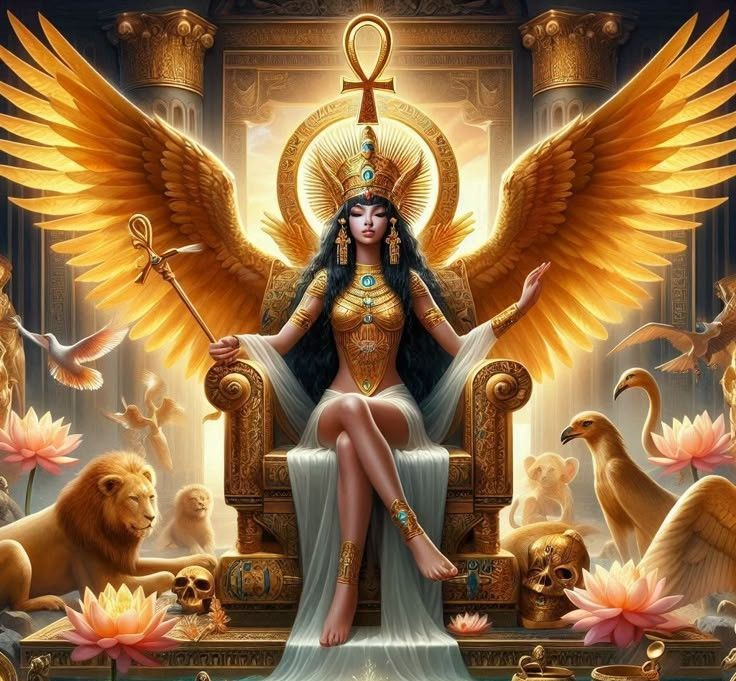
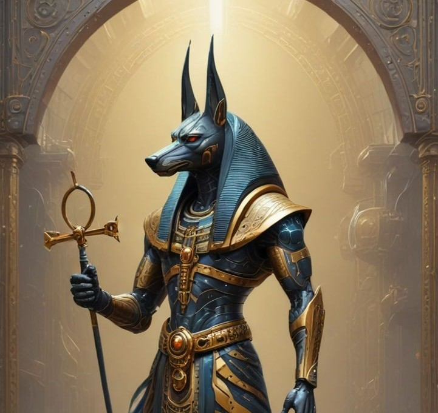

Rá

Ísis é a deusa egípcia da magia, proteção e maternidade.
Ísis

Anúbis é o deus egípcio dos mortos e guardião dos túmulos.
Mitologia Egípcia
A Mitologia Egípcia é um conjunto de histórias e crenças dos antigos egípcios, que explicam a criação do mundo, a vida, a morte e o além por meio de seus deuses e símbolos sagrados. No centro dessas histórias estão os deuses Rá, Ísis e Anúbis, que governavam o céu, a magia e o mundo dos mortos. Rá é o deus sol, criador e fonte de vida. Ísis é a deusa do amor, da magia e da proteção, conhecida por sua sabedoria e poder de cura. Anúbis é o guardião dos mortos, responsável pela passagem das almas para o além. Esses deuses são essenciais para a cultura e as tradições do antigo Egito.